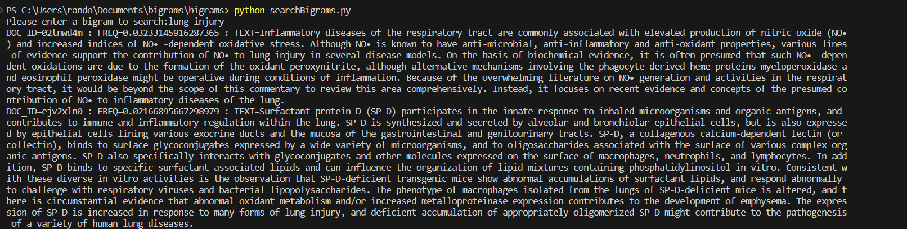

Bigrams Search Engine
Github repository link: https://github.com/GrantUrquhart/bigrams-search-engine/tree/main
Overview:
In this project, I developed a search engine that allows users to search for bigrams (pairs of adjacent words) in a corpus of documents. The engine processes a JSONL file containing documents with their respective titles and text, extracts all bigrams found in the title or text, and creates a corpus file with these bigrams. Users can then search for specific bigrams, and the engine returns the relevant document information, including document ID, frequency of the bigram, and the text snippet where the bigram was found.
Example output of the Bigram Search Engine project.
Key Features:
- Bigram Extraction: Developed a tokenizer that efficiently extracts bigrams from the document corpus.
- Index Creation: Implemented an indexing process that stores bigrams along with their frequencies and document IDs.
- Search Functionality: Created a search interface that allows users to input bigrams and retrieve matching documents.
Challenges Faced:
- Efficient Indexing: Designing an indexing mechanism that could handle a large corpus of documents while ensuring quick search responses was a significant challenge. I overcame this by optimizing the data structures used for storing the index.
- Tokenization: The tokenization process needed to be robust to handle various document formats and languages. I addressed this by implementing a flexible tokenizer that could be easily adjusted for different input types.
Technologies Used:
- Python for the backend processing and search functionality.
- JSONL for storing the document corpus.
What I Learned:
- Data Structure Optimization: This project deepened my understanding of data structures and their impact on the performance of search algorithms.
- Natural Language Processing: I gained practical experience in NLP techniques, particularly in tokenization and text processing.
- Software Engineering Best Practices: Working on this project helped me improve my coding practices, including writing clean, maintainable code and effectively debugging complex issues.
Conclusion:
The Bigram Search Engine project was a valuable experience in developing a practical application of natural language processing and search algorithms. It not only enhanced my technical skills but also provided insights into the challenges of working with large text datasets and the importance of optimization in search engines.